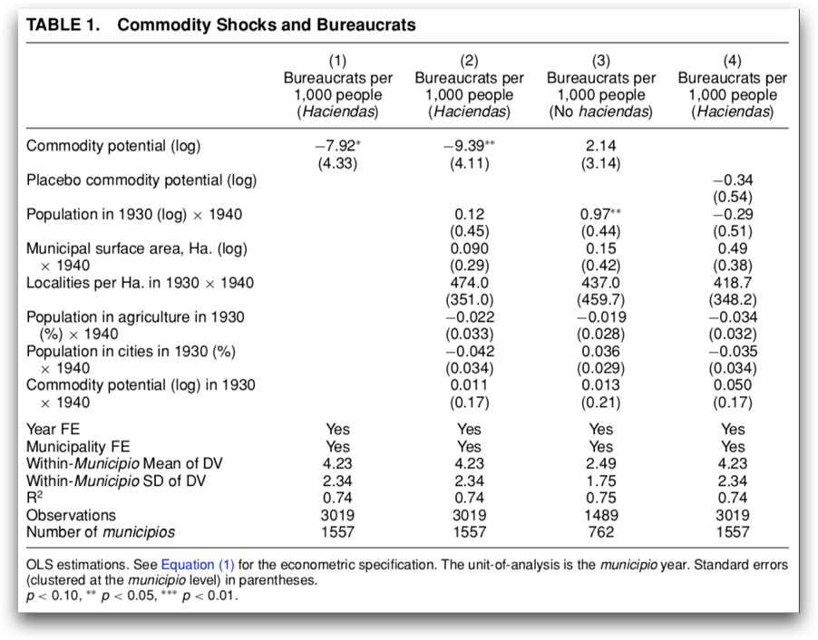
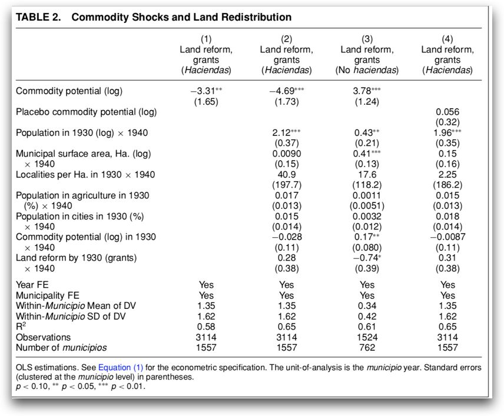
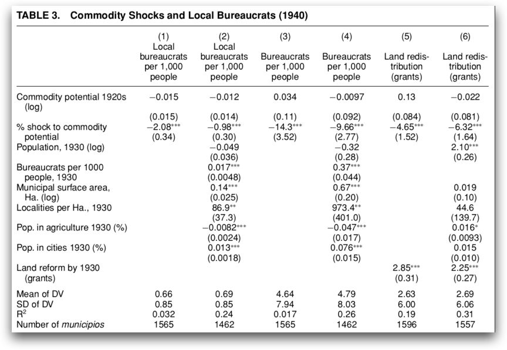
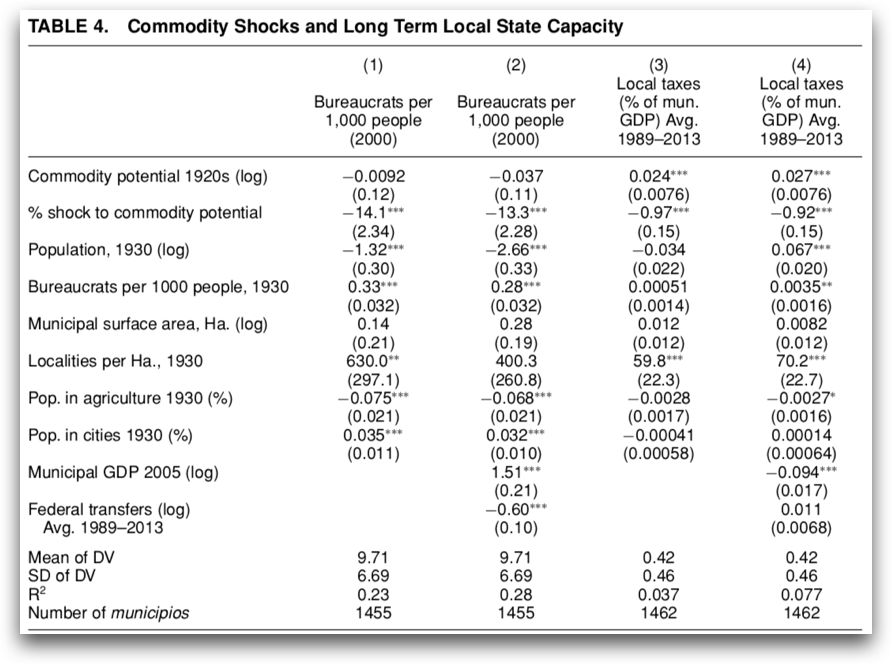

收录于合集
文献来源： Garfias F. Elite competition and state capacity development: Theory and evidence from post-revolutionary Mexico. American Political Science Review , 2018, 112(2): 339-357.
作者简介： Francisco Garfias，加州大学圣地亚哥分校（UCSD）全球政策和战略研究院助理教授，其研究领域为比较政治经济学，国家能力，税收，社会冲突和拉美政治以及计量经济学。
一直以来，对国家能力发展、现代国家形成的主流解释都是基于国际冲突的军事- 财政视角。然而这一理论无法解释那些缺乏大规模冲突国家（非洲和拉美国家）的国家能力发展，而且对国际冲突的强调也没法解释国家能力在次国家领域上的差异。本文以墨西哥为例，提供了对国家能力发展的替代性解释，指出了国家能力发展的国内动力。在基于国家竞争的军事- 财政视角外提出了一种基于精英竞争的国家能力理论。
作者把低国家能力的国内精英分成两类。一类是拥有生产资料的经济精英，另一类是政治精英。经济精英会利用自己掌握的资源来威慑统治者，防止自己的财富被剥夺。经济精英还会避免让统治者发展国家能力，以防止国家能力被用来对付自己。由此，作者在文章中论证了低能力平衡(low- capacity equilibria)的概念。即便国家在一段时间内保持了稳定，那么国家依然可能是脆弱的。因为构建国家能力有时要冒着打破政治平衡的风险。
但作者认为，在一定条件下，如果在以一派精英为代价的情况下，另一派精英的权威得到了加强，权力平衡发生巨大的改变，那么强化国家能力的动机也会随之产生。对于精英间政治平衡的打破，对精英竞争的调动往往能够成为国家能力发展的契机。由此，作者提出两个假设：
H1：当经济精英遇到大幅度的产品价格降低时，政治精英将更可能去剥夺经济精英的资产
H2：当经济精英遇到大幅度的产品价格降低时，政治精英将更可能投资于国家能力建设
由大萧条带来的农产品价格的降低时完全出乎意料的和外生的。因此，作者以墨西哥为例，根据大萧条时期墨西哥次国家层面的国家能力变化来检验自己的研究假设。
作者认为任何国家动员资源、执行政策都要依靠政府官员在基层的存在。而且保持一定规模的官僚体系也需要资源。官僚队伍的扩张反应了政治精英在构建国家能力上的投入。因此作者把地区上每千人的官员数量用于表示政治精英对于国家能力发展的投入。这种测量方式也比较贴合当时墨西哥的实际。在后革命时代的墨西哥，政府仅仅在一小部分地区能够做到持续的存在。传统用税收能力测量国家能力的做法必须要有一定规模的政府存在作前提条件。在后革命时代的墨西哥，这一前提是很难成立的。第二个因变量是资产剥夺，根据墨西哥当时的经济结构，作者用土地再分配的水平来表示这一变量。对土地的剥夺将会实质性的影响地主抵抗地方政治领导人的能力。作者又把墨西哥的地区分成有大地主存在和没有大地主(No haciendas)存在两类。所谓的大地主至少要有一个牧场、农场或种植园。这些人的财富来源主要是基于对土地的掌握。而经济精英的能力则用其可能动员的经济资源来表示，这一变量用地区主要产品价格和产量复合而成的变量表示（Commodity potential）。

在表1中，我们可以发现产品的预期价值和地区官员的增加有显著的负相关关系。在1930年，在人口规模和国家能力（7700人，29个官员）处于平均水平的大多数地区，一个平均化的价格打击会导致该地的地方政府增加18名雇员。不过这种效应只在拥有大地主的地方有所体现，在那些没有土地精英(No haciendas)的地区，从模型3中我们也可以发现，这种效应是不存在。模型4则用10年后的产品预期价值做了安慰剂检测，其作用并不显著，也说明作者的假设是具有稳健性的，经济精英遭受打击后，政治精英确实更乐于去投资国家能力的建设。

在表2中我们可以发现，产品预期价值和土地再分配之间存在着显著的负相关关系。这说明大萧条对经济精英的打击，让经济精英无法抵御政治精英对其资产进行再分配。同样，安慰剂检测也没有显著性。但是在没有土地精英的地区，产品的预期价值和土地分配之间出现了显著的正相关。作者认为，这也并不是什么意外的结果。由于缺乏土地精英，土地再分配所针对的对象不再是少数几个人，再加上产品价格的下降，这会让无地农民对土地再分配的请求变成一个费而不惠的过程。

表3是作者根据1940年的截面数据进行的回归分析。一方面是因为1940年是墨西哥土地改革的一个高峰期，另一方面，也是因为1940年能够获取到纯地方官员（排除了地方上的联邦政府官员）数量的数据。要注意到，这里的自变量是1930年相比于1920年产品潜在价值的变化程度（%shock to commodity potential），这是一个负数，因此它和地方官员数量，各地区所有类型的官员数量，以及土地再分配都呈显著的负相关。这也与作者前面的假设相吻合。

对经济精英剥夺产生的作用应该是永久性的。不论是地方权威的建立，还是对土地的再分配都是一个几乎不可逆的过程。因此作者想要检验，大萧条时期的价格打击对地方政府能力的影响是否具有长期性。作者利用2000年的截面数据做了验证。结果如表4所示，其中自变量还是1930年相比于1920年产品潜在价值的下降比率（%shock to commodity potential）。模型1和模型2的因变量还是每千人的官员数量。模型3和模型4的因变量是1989-2013年地方政府税收占当地GDP的平均百分比。在20世纪末后，墨西哥地方政府显然具备了开展税收的前提条件，因此作者在此也以测量国家能力的常用做法为因变量做了两个模型。在模型2和模型4都纳入了联邦政府转移支付的变量，解释变量依然显著。如图所示，自变量在所有四个模型都和因变量呈显著的负相关关系。这说明，当年的精英竞争对墨西哥地方政府能力在今天的差别是有解释力的。
低能力平衡的状态在中世纪晚期和欧洲的早期现代国家，19世纪和20世纪早期的拉美以及今天的阿富汗、海地和刚果（金）等脆弱国家都存在着。对经济精英的某些外生打击，往往给了政治精英打破平衡并建立和巩固政治权威的机会。作者对墨西哥地方精英冲突的论述让我们能够进一步解释，为什么一些国家能够爬出低能力平衡的泥潭实现国家能力的发展。同样，这种对低能力平衡的打破和对地方精英竞争的调动打开了一条解释次国家层面国家能力不匀整性的通路。
*** 特别鸣谢吉林大学行政学院Social Science Club的小组成员
编译：赵德昊
编辑：吴温泉
审读：杨端程


“广告点一点，也是支持学术公益 ”
”
政文观止
微信扫一扫赞赏作者 __赞赏
已喜欢，对作者说句悄悄话
取消 __
发送给作者
发送
最多40字，当前共字
上一页 1/3 下一页
长按二维码向我转账
受苹果公司新规定影响，微信 iOS 版的赞赏功能被关闭，可通过二维码转账支持公众号。